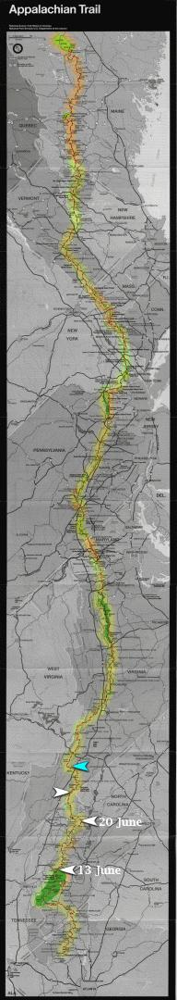

| Home | The Fox | Statistics | Maps | Churches |
StatusConfirmed - Evening 24 June 1998:Confirmed - the Fox reached Damascus, VA Confirmed - 453.1 miles complete (20.92%) Confirmed - 1712.4 miles to go (79.08%)
Projected - Evening 28 June 1998: The Fox in Virginia[25 June 1998] Yesterday evening the Fox contacted us from Damascus, Virginia. He crossed the state line into Virginia at 4:41pm that afternoon; a line of rocks across the trail demarcated the border. While in town he ate a whole pizza and for the first time tried someWe were incorrect that the Fox was going to spend last Monday night in Dennis Cove, which would have put him behind by about ten miles; he wound up behind by only about three miles, which he recovered from by a long hike yesterday. This put him in to Damascus after the post office and supply stores had closed, so his start this morning will have been delayed by his business there. The team of which Bobby is hiking is now down to two; Ziad ``threw in the towel'' (the Fox's words) at Hot Springs, and will spend the summer relaxing at home while the Fox and NaPensee continue down the trail. NaPensee, being significantly older than the Fox, is hiking more slowly, and will adopt the habit of taking vehicular shortcuts around various segments of the trail (he has hiked the AT many times before and incurs no dishonor). So the Fox and his partner have been alternately overtaking each other and do not hike together for extended periods. The Fox reported that there had been severe thunderstorms ``two nights ago'', which presumably referes to Monday evening. Otherwise the weather has been very clear; he remarked upon the beauty of a sunset one night at 9pm as he was crossing one of the many balds on this section of the trail. |

Legend
|